Every feature, explained.
Walk through every Trade Copier Ultimate v6.30 module — what it does, when to turn it on, what to set, and what you'll see on the panel. Use the index below to jump to any feature.
Live Dashboard.
The command centre for your EA. See connection statuses, active positions, daily counters, and system health at a glance.
Your operational overview
The Home tab is where you monitor the pulse of the EA.
System Status — Watch the Telegram, Discord, and Bridge connection lights. Green means you are actively receiving data. Ping times show your broker latency.
Daily Metrics — See how many signals were parsed, accepted, or rejected today. Track your daily PnL and win rate directly on the panel.
Active Positions — A condensed table showing exactly what the EA currently manages, complete with floating PnL and active TP/SL levels.
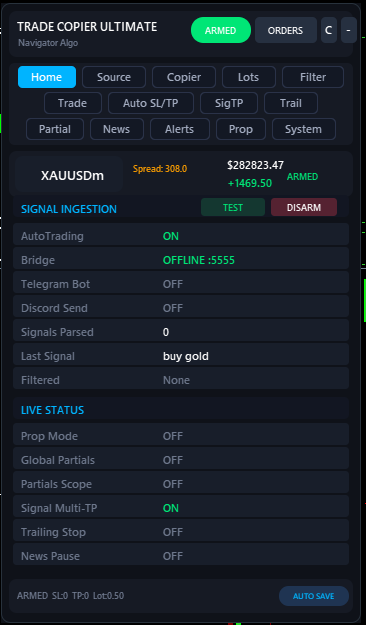
Core Settings.
Define the fundamental execution parameters, including global slippage, magic number assignment, and account protection.
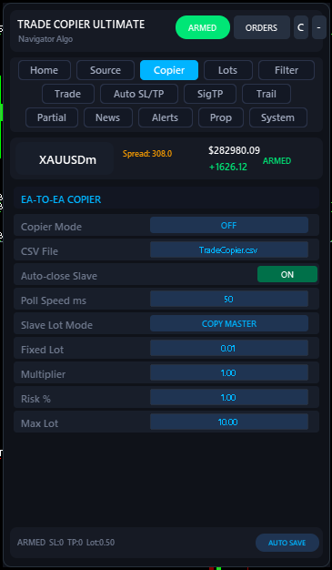
Fundamental execution control
Set the boundaries for how the EA interacts with your broker.
Magic Number — Crucial for isolating TCU's trades from your manual trades or other EAs. TCU will only ever modify or close trades matching this magic number.
Max Slippage — Protect yourself from poor execution. If the broker slippage exceeds your threshold (in points), the trade request is aborted.
Max Spread — A global safety net to prevent entering the market during extreme volatility or session rollovers.
Run three sources in parallel.
Telegram Bot API, Discord webhook, and Bridge mode can all be ON at the same time. Every signal that arrives is parsed by the same engine — duplicates across sources are de-duped automatically.
How each source works
Pick whichever channels carry your signals. Most buyers run Telegram + Bridge so they're covered for both public and private channels.
Telegram Bot API — paste your Bot Token from @BotFather and the Chat ID of the channel/group your provider posts in. The bot must be added to the channel as admin. Free, native, no extra software.
Discord Mode — paste a Discord Webhook URL for the channel you want to read. Works on any free Discord server. Polls every Discord Poll sec seconds.
Bridge Mode — runs the NTS Super Bridge app on your PC. Lets you read private Telegram channels. The EA polls http://127.0.0.1:<port> — nothing leaves your machine. View Bridge Docs →
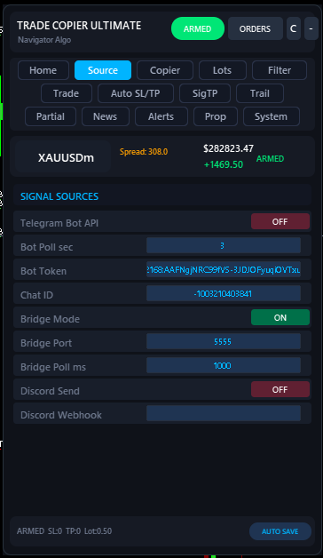
Four ways to size a trade.
Use Fixed for absolute control, Risk% for account-aware sizing, Multiplier to scale your provider's lot, or MarketTrade to copy exactly what the signal sends.
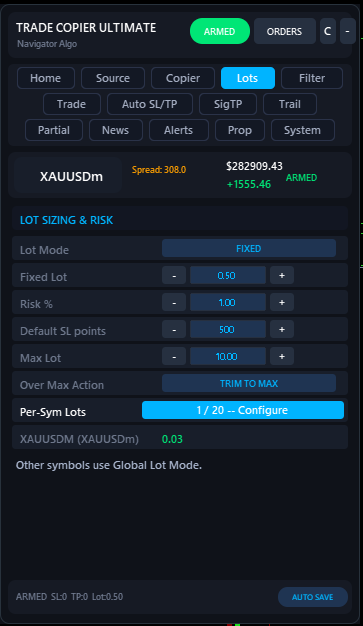
Pick a lot mode that matches your style
Risk% is the safest choice for prop firms and growing accounts. The EA reads your account balance, the signal's SL distance, and computes a lot size that risks exactly your Risk % if SL hits.
If a signal arrives without an SL, the EA falls back to Default SL points for the risk math — so even SL-less signals get sized sanely.
Over Max Action matters: if the computed lot exceeds Max Lot, you can either TRIM TO MAX (open at the cap) or SKIP (refuse the trade). Trim is the default — never skip a signal silently unless you know why.
Per-Symbol Overrides — Need XAUUSD at 0.15 lots but EURUSD at 0.5? Use the built-in Configure button to launch the visual lot-editor modal without messing with comma-separated text strings.
One signal, three trades, three TPs.
When your signal has TP1 / TP2 / TP3, TCU opens three separate trades, each with its own TP. Lot size is split per the Lot Distribution percentages.
How the split works
A signal like BUY GOLD 2050 / TP 2055 2060 2070 / SL 2045 with Risk% sizing producing 1.0 lot becomes three trades: 0.40 / 0.30 / 0.30 using the default 40,30,30 distribution. Each trade closes independently when its own TP is hit.
Optionally the EA can move SL to breakeven on every position once TP1 closes — turn on SL → BE on TP1. After TP2 closes, you can ratchet again with SL → TP1 on TP2. That's the classic "lock profit, ride the rest" pattern automated.
Pending orders (BUY LIMIT etc.) get the same split treatment when Pending Multi-TP is on — the limit order is placed three times at the same entry, each leg with its own TP.
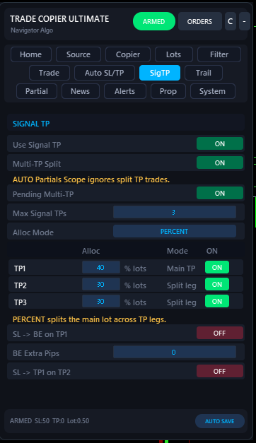
Take some off, let the rest run.
Auto-close a percentage (or fixed lot count) at pip milestones. Optionally move SL to breakeven, TP1, or TP2 as each milestone hits.
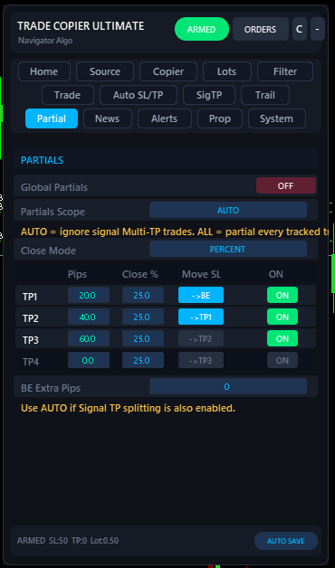
Up to four pip-based milestones
Configure four levels (TP1–TP4): the pip distance at which the partial fires, and either a percentage or a fixed lot count to close. Only filled levels run — leave the rest at zero.
Move SL when partials hit. The most common pattern: TP1 at +20 pips closes 50%, then SL jumps to entry (breakeven). TP2 at +40 pips closes another 50%, SL ratchets to TP1 price. Now you have a position that mathematically can't lose, riding free.
Partials Scope — set to AUTO if you also use Multi-TP splitting. AUTO means partials only run on plain (non-split) trades, so they don't double up. Set to ALL to apply partials to every position the EA tracks.
Lock profit, then ride.
Pip-based trailing that activates when a position is in profit. Optional automatic move-to-breakeven the moment trailing kicks in.
Trail with two parameters
Once a position is up by Trail Start pips, the EA starts trailing the SL Trail Distance pips behind price. The SL only moves on every Trail Step pips of new high — so a noisy market doesn't waste broker requests.
If Move To Breakeven is ON, the moment trailing activates the SL also jumps to entry plus BE Buffer pips. From that moment on the trade can't lose, regardless of trail distance.
Trailing only touches positions opened by this EA's magic number — your manual trades are never modified.
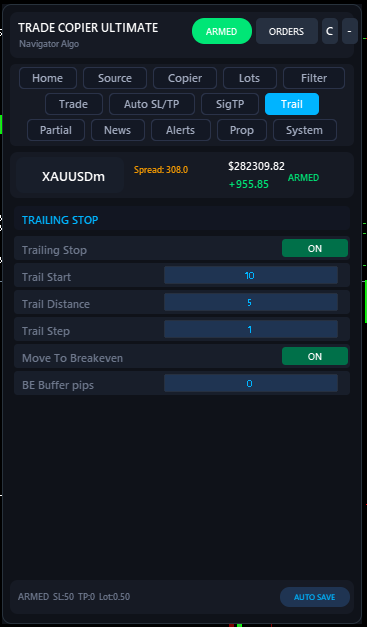
Fill the gaps when the signal doesn't.
Add a fallback SL/TP if the signal didn't include them, plus parse non-standard keyword names from foreign-language or shorthand signal channels.
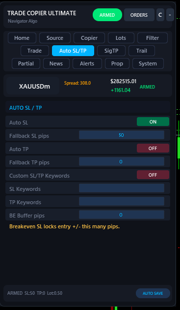
Two ways to handle missing SL/TP
Auto SL / Auto TP — when ON, any signal that arrives without an SL gets Fallback SL pips applied automatically. Same for TP. Use this for channels that send "BUY EURUSD" with nothing else and expect the EA to handle it.
Custom SL/TP keywords — some channels write RISKAT 1.0850 instead of SL 1.0850. Add RISKAT to the SL keyword list and the parser starts recognising it. Comma-separated: STOP,STOPLOSS,RISKAT.
The BE Buffer pips field at the bottom is shared with the trailing module — it's the cushion above entry used by every "move to breakeven" trigger across all features.
How the EA handles every signal.
From pendings to reverse-signal mode to "close all" command parsing — this is where you tune the execution behaviour.
The execution rules in detail
Arm Execution — the master kill-switch. OFF means signals are still parsed, validated, and logged, but no trades fire. Use it during your first day to watch the EA work without risking anything.
Reverse Signal — every BUY becomes a SELL and vice versa. Useful for fading a provider you're confident is wrong (rare, but it happens).
Opposite Action — what to do when a BUY signal arrives while a SELL is open: DO NOTHING (default), CLOSE OPPOSITE, or CLOSE ALL. Pick CLOSE OPPOSITE if your provider treats new signals as flip commands.
Modify Existing — when ON, a same-direction same-symbol signal updates the SL/TP of the open position instead of stacking a second trade. Cleaner for swing-trader providers.
Cooldown min — minimum minutes between accepting two same-direction signals on the same symbol. Cuts noise without disabling duplicates entirely.
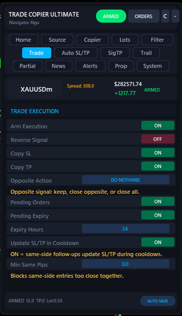
Block bad signals before they hit.
Spread filter, time window, whitelist/blacklist, skip-keywords, duplicate detection, and Entry Armour. Layer them — every filter is checked in order.
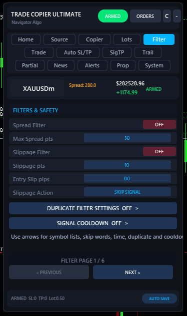
Six filters working together
Duplicate filter — blocks identical signals firing twice. Critical for buyers running both Telegram and Bridge sources where the same message arrives twice.
Spread filter — refuses trades when current spread exceeds Max Spread points. Useful around news and session opens.
Time filter — only accept signals between Start and End server time (e.g. 08:00–22:00). Avoid the rollover spread spike.
Whitelist / Blacklist — restrict to a list of symbols, or block a list. Useful for "Telegram says XAUUSD or nothing" or "never trade USDTRY no matter what".
Skip keywords — drop any signal containing words like test, cancel, delete.
Entry Armour — refuses any signal missing required fields (direction, symbol, and either an SL, TP, or explicit entry). Strongly recommended ON for prop accounts.
Protect your funded accounts.
Hard guardrails that enforce max daily loss limits and automatically close out trades if a prop firm rule is approaching violation.
Built-in equity protection
Prop firm accounts live and die by daily drawdown rules. TCU manages this for you.
Daily Loss Cap — Define your maximum allowed daily loss as a percentage of your starting balance (e.g., 4.5% to stay safely under a 5% limit). If this limit is hit, the EA immediately closes all its open trades and refuses any new entries until the next server day.
Safe Mode — Engage Prop Safe Mode to automatically tighten lot sizing and increase filtering strictness when the account enters drawdown, ensuring you don't aggressively revenge-trade back into a violation.
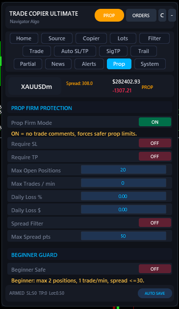
Stand down around news events.
Reads the MT5 economic calendar and pauses new entries during the impact window. Open trades are not affected.
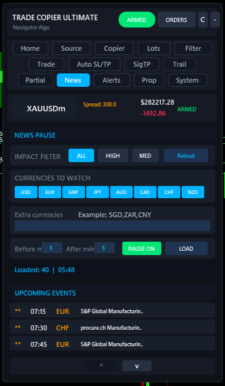
Filter by impact and currency
Pick which currencies to watch (defaults to majors), which impact levels matter (High, Medium, or both), and how many minutes before/after each event to pause. The EA loads the calendar at startup and refreshes on demand.
Look at the Upcoming Events list at the bottom of the tab — that's the live calendar. The Loaded counter shows how many events match your filter for today.
Pause only blocks new entries. Existing positions, trailing, partials, and TPs all keep running. If you need a hard stop including managing open trades, use Prop Mode's daily-loss cap instead.
Keep an eye on everything.
Get instantly notified when the EA takes action. Push notifications to your phone, email alerts, and local sounds.
Customizable notifications
You don't need to stare at the chart. Tell TCU exactly what events should trigger an alert.
Alert Types — Choose between MT5 Terminal Popups, Push Notifications (to the MT5 mobile app), Email, or simple local sound alerts.
Event Triggers — Independently toggle alerts for New Trades, Closed Trades, Modified SL/TPs, Rejected Signals, and Daily Goal hits.
The EA will format a clean, readable message detailing the symbol, action, lot size, and price for every notification.
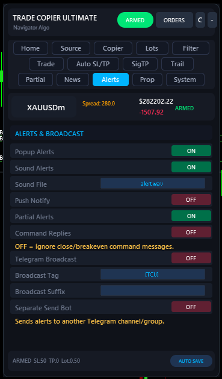
Diagnostics & Overrides.
Fine-tune the EA's internal behaviour, enable advanced logging, or reset state.
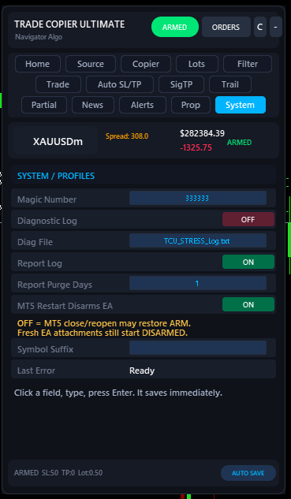
Under the hood
The System tab exposes the EA's brain for advanced users and troubleshooting.
Diagnostic Logging — Enable verbose logging to see exactly how TCU parses a specific signal string. Essential if you're writing custom keywords and need to debug why a signal was rejected.
Symbol Mapping overrides — Force the EA to map "GOLD" to "XAUUSD.pro" if your broker uses unusual naming conventions that the auto-mapper fails to catch.
State Reset — Clear the EA's internal memory (daily counters, active partial queues, etc.) without having to restart the terminal or detach the EA.